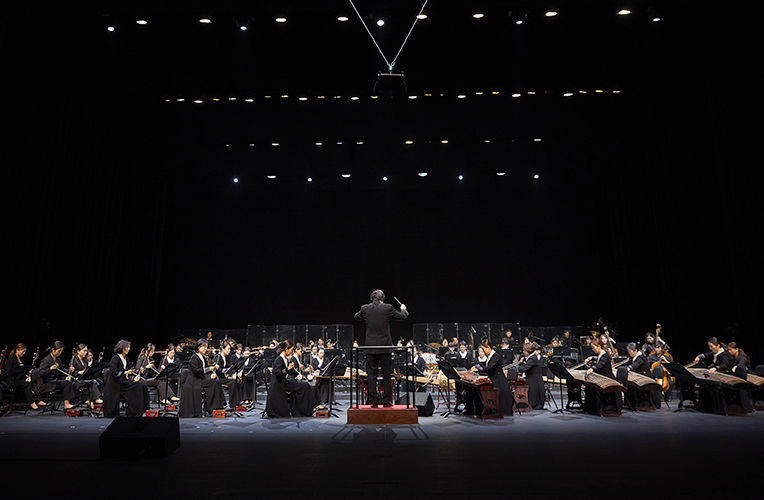

National Gugak Center Exchange performance <Chukwon, the Prayer>
- Time
- 2.3.(Fri) 19:30
- Venue
- Yeonak-dang Hall
- Ticket Price
- S seat 10,000won A seat 8,000won
- Cast/Direct
- National Gugak Center Contemporary Gugak Orchestra, Folk Music Troupe, Busan National Gugak Center Traditional Music Orchestra Folk Performance Group and Invited musicians/ Art director·conductor | Yi Yong-tak
- Audience Age
- Children in elementary school or older
The exchange and harmony with National Gugak Center Contemporary Gugak Orchestra, the prayer on the first full moon for blessing new rabbit year!
The Chukwon opens the year 2023. In order to receive good luck as the spring comes and to expel bad luck on the first full moon day, the National Gugak Center Creative Gugak Orchestra gives the audience a great musical time.
Program
Greeting the Spring_The green grassland, the sound of horse hoof (composed by B.Sharav, M Birvaa) Blocking the badness and Pray_The Time of Wind, Tree, and Land (arranged by Yi Jeong-myeon) Into the remembrance_Sijeolpungnyu (composed by Choe Ji-hye) Again, the world_Beompijungnyu (composed by Yi Yong-tak) Walking on a new path_A shower (composed by Yi Gyeong-seop)
* Schedule and performances are subject to change.
